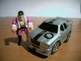
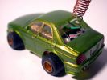
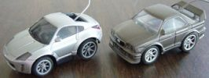

Home
Articles
Galleries
Forums
bitPimps Photo Gallery
Sweet shots of high-end custom modifications on micro r/c.
Home
Login
Album list
Last uploads
Last comments
Most viewed
Top rated
My Favorites
Search
Image search results - "gloria"
Sentinel XS
279 views
Sentinel XS..my absolute favourite car(Tommy Vercetti's too)...better pic will come...have to teke HER outta garagge...

Tommy Vercetti and Sentinel V8 69
296 views
One of his favourute cars V8 XST engine..lot of hp
Sentinel V8 69 rear
280 views
Sentinel V8...first spray experience
Sentinel V8 69
315 views
Sentinel V8 N 69....first spraying experience
Datsun 510
907 views
continued... I had this clear gloria sitting around... and so here's my latest body mod... Old school Datsun 510!
Datsun 510
1214 views
Yagbols writes: Hello! I was about to give up the hobby, but...

Pimpin' Gloria
623 views
continued... This was my entry for the bitPimps Most Pimped Out Ride contest.
Pimpin' Gloria
978 views
SuperFly writes: Yo. A true pimp is always late.

Nissan Fairlady 350 Z vs Nissan Gloria
329 views
Mean Green Gloria w/ Alloys
320 views
Mean Green Gloria w/ Alloys
345 views
11 files on 1 page(s)
Copyright © 2002 - 2026 | All rights resereved by penalty of: death, cappin', blastin', sprayin', etc.